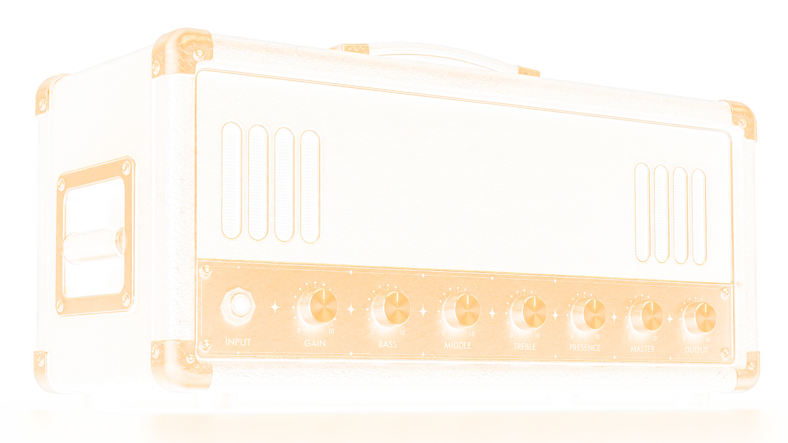
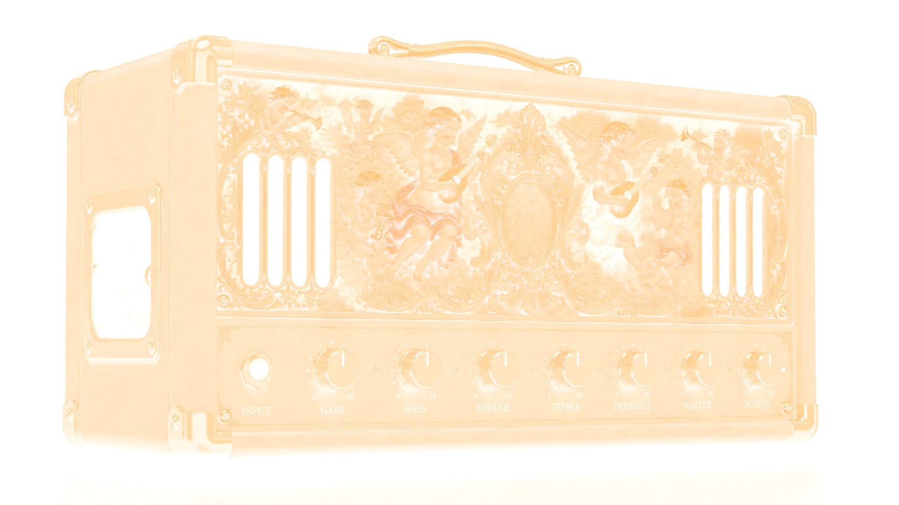

Three amps, nine voices
Camden, Portland and Katahdin — each captured from a real, mic'd-up rig, cab baked in.
REMI DSP · NEURAL GUITAR RIG



3 AMPS · 9 VOICES · FULL-RIG A2 CAPTURES
THE PLUGIN
Amp, pedalboard, studio strip and tuner — in one plugin, in any order you like. No account, no iLok, no per-amp upsell.

MAINE v0.2.0 — NEURAL CORE · 44.1–96 kHz
Camden, Portland and Katahdin — each captured from a real, mic'd-up rig, cab baked in.
Ten slots, any order. Drag a block, rewire the rig — gate, comp, drive, delay, reverb and more.
A console EQ into a FET compressor, so your tone lands finished instead of raw.
Switching amps never jumps your level. The A2 captures are built that way.